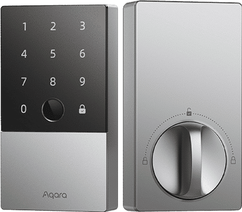

Guide · Locks
Aqara smart lock with Home Assistant: U400 and U100
The question people actually ask is narrower than "is this lock good". It is: does the Aqara smart lock work with Home Assistant, and what do I have to buy to make that true? The answer depends entirely on which Aqara lock you pick, because the two current models sit on two different radios. The U400 is Matter over Thread and joins Home Assistant directly. The U100 is Zigbee and reaches Home Assistant through an Aqara hub that exposes it as a Matter device. Same brand, same fingerprint reader, two different wiring diagrams.
This guide is built from Aqara's own product pages and Home Assistant's Matter integration documentation, linked at the bottom. It covers what each lock is, what Home Assistant needs on its side, the setup order that avoids dead ends, and the caveats Aqara prints in its own footnotes.

The short answer
If Home Assistant is your primary controller, the U400 is the cleaner purchase. It speaks Matter over Thread, and Aqara says on its product page that the lock "works by design with Apple Home, Home Assistant, Google Home, Amazon Alexa, Samsung SmartThings". There is no Aqara bridge in the middle and no Aqara account holding the device hostage — Home Assistant's Matter integration runs its own Matter controller locally, over your Wi-Fi or Thread network.
The U100 is the older Zigbee design. Aqara's page describes it as "built on Zigbee protocol", compatible with Matter and other ecosystems "with a Matter-supported Aqara hub and a Matter controller". Read the footnotes carefully: the hub is not optional for Home Assistant users, and an Aqara Zigbee 3.0 hub is also listed as required for automations and remote unlock. Aqara does not document pairing the U100 directly to ZHA or Zigbee2MQTT, so do not count on that path.
What the U400 is
The U400 is a full deadbolt replacement with a fingerprint reader, keypad, NFC and ultra-wideband hands-free unlock. Aqara's spec sheet makes it one of the better-equipped Matter locks on paper.
| Spec | Aqara Smart Lock U400 |
|---|---|
| Protocol | Matter over Thread |
| Entry methods | Fingerprint, keypad (permanent, offline and scheduled codes, anti-peep), app, voice, mechanical key, NFC card, Apple Home Key in Wallet, Samsung Wallet Digital Home Key via SmartThings |
| Fingerprint | Up to 50 prints, unlock in 0.3 s, up to 98.6% recognition rate |
| Hands-free | UWB unlock with iPhone or Apple Watch; Aliro-enabled; requires a Thread-enabled Apple home hub (HomePod mini or Apple TV 4K) |
| Power | Rechargeable battery, up to 6 months per charge; USB-C charging in place without removing the battery or cover; low-battery notice at 20%; separate USB-C emergency port for a power bank |
| Auto-lock | Gyro sensor locks on close; no door contact sensor needed |
| Modes | Night Latch Mode (admin-only unlock from outside, free exit from inside); Do Not Disturb mutes routine alerts, keeps forced-entry, door-ajar and critical alerts |
Two lines in that table matter more than the rest for a Home Assistant house. The first is Matter over Thread: that is the whole integration story, and it is why the U400 needs a border router rather than a hub. The second is the gyro-based auto-lock, which means you do not have to buy or wire a separate door sensor to get "lock when the door shuts".
The UWB unlock is the one feature that pulls you toward Apple hardware: Aqara's page ties hands-free unlock to a Thread-enabled Apple home hub. It is a nice trick, not a Home Assistant feature, and you should not buy the lock for it if you do not own a HomePod mini or Apple TV 4K already. Aqara also notes the lock pairs with its Doorbell Camera Hub G410 to see and unlock from Apple Home — again, an Apple-side feature.
What the U100 is
The U100 is the keypad-plus-fingerprint deadbolt that made Aqara's name in locks. It is a straightforward, well-specified Zigbee lock with a matte anti-peep keypad and locally stored fingerprints.
| Spec | Aqara Smart Lock U100 |
|---|---|
| Protocol | Zigbee; Matter exposure requires a Matter-supported Aqara hub plus a Matter controller |
| Apple | Apple Home and Home Key support is native; Home Key works when the Apple device is out of power |
| Fingerprint | Up to 50 prints, 98.6% recognition rate, stored locally |
| Keypad | Matte, anti-peep; permanent, periodic and one-time passwords; one-time codes generated locally so they work while the lock is offline |
| Door status | Sensing plus gyro-based auto-lock after close (Aqara's footnote said status indication and logging were planned at publication) |
| Build | Complies with the same safety standard as BHMA Level 3; IP65, which Aqara notes applies to the outer panel only |
| Emergency entry | Mechanical key plus USB-C emergency charging port |
| Security | End-to-end encryption with 128-bit AES; fingerprints stored locally |
That "outer panel only" note on the IP65 rating is the kind of detail that gets lost in a product listing. It means the exterior half is rated for weather; the interior half is an indoor part. If your door is exposed to driven rain, plan the installation with that in mind rather than assuming the whole lock is sealed.
Aqara also prints a caveat about IFTTT support on the U100 page: it "may be unavailable by the time of the launch". Treat IFTTT as a bonus that may not exist, not as part of your automation plan. For Home Assistant users this is irrelevant, since the point of the exercise is to keep automations local anyway.
What Home Assistant needs on its side
Home Assistant's Matter integration does not lean on anyone else's controller. It runs its own Matter controller as the Matter Server app and talks to it over a WebSocket, and it controls Matter devices on a local Wi-Fi or Thread network. There is no vendor cloud account in that path, which is the reason a Matter lock belongs on a Home Assistant shopping list at all.
Three practical requirements follow, and each one is a step people get wrong:
- A Thread border router, for Thread devices. Without one, Home Assistant reports that "this device requires a border router" and commissioning stops. Home Assistant Green has no Thread radio built in, so a Green on its own is not a border router. See Home Assistant Green for what that box does and does not include, and how a Thread network fits together if border routers versus controllers is still fuzzy.
- The Home Assistant Companion app for commissioning. Matter commissioning happens from the iOS or Android app. A desktop browser will tell you that you need the Companion app, which is a confusing dead end if you only ever use the web UI.
- Decide multi-admin before you pair. Matter allows several administrators. A lock that already lives in Apple Home or Google Home can be shared into Home Assistant through the share-device flow instead of being re-commissioned, so it answers to both ecosystems at once. That is the sane path if the lock is already installed and working in Apple Home.
Setting up the U400, in order
- Confirm a Thread border router is on the network and that Home Assistant can see the Thread network. Do this before you touch the lock; it is the single most common failure point.
- Install the lock and power it up. Keep the battery charged — commissioning with a low battery is a bad time.
- Open the Home Assistant Companion app on your phone, go to Settings, then Devices & services, and add the Matter integration if it is not already there.
- Commission the lock. Scan the Matter pairing code from the app, not from a desktop browser.
- If the lock is already in Apple Home, choose the share-device flow instead of re-pairing, so both ecosystems keep working.
- Set codes, fingerprints and auto-lock in the Aqara app first, then build Home Assistant automations on top of the lock entity.
- Check for firmware updates. Home Assistant's Matter integration handles Matter OTA device updates, and it also exposes a Matter network map and diagnostics when you need to see what the mesh looks like.
Setting up the U100, in order
- Add the U100 to an Aqara Zigbee 3.0 hub using the Aqara app. This is required, not optional, for automations and remote unlock.
- Make sure that hub is a Matter-supported model, since the hub is what exposes the lock to Matter at all.
- Add the hub to Home Assistant through the Matter integration, exactly as you would any other Matter device, with the Companion app.
- The lock then arrives in Home Assistant as a Matter device through the hub. Its Zigbee link is between the lock and the hub; Home Assistant never talks Zigbee to it.
- Keep the Aqara app for the things Home Assistant does not cover: fingerprint enrolment, one-time codes, and firmware.
Which one to buy
For a Home Assistant-first house: the U400. Matter over Thread, direct commissioning, no hub, no Aqara account in the control path, and a gyro that removes the need for a door sensor. The cost is that you need a Thread border router, and the UWB party trick only works with Apple hardware. Check Aqara Smart Lock U400 on Amazon for current price and stock.
If you already run an Aqara hub, or want Apple Home Key without Thread: the U100. It is a mature Zigbee lock with local fingerprint storage, native Home Key, and one-time codes that generate offline. It gets to Home Assistant through the hub, so you are maintaining two systems instead of one. Check Aqara Smart Lock U100 on Amazon for current price and stock.
If your house is already built on Z-Wave and you do not want a second radio type, a Z-Wave lock is a legitimate alternative with a long track record; see the Z-Wave hub guide for what that radio needs. And if you have not settled the radio question at all, Zigbee vs Z-Wave covers the older pair while Matter & Thread covers where locks are heading. The full hardware index sits in Devices.
Gotchas worth knowing before you order
- Each ecosystem needs its own Thread-enabled Matter controller. Aqara says this plainly. One border router serves the mesh; every ecosystem you want to control the lock from still needs a controller on that mesh.
- No direct Zigbee pairing for the U100. Aqara documents Matter exposure through its hub. It does not document ZHA or Zigbee2MQTT pairing, so treat that as unsupported even if a forum thread claims otherwise.
- The U200 is a different lock. Aqara's retrofit model has its own specifications, which are not covered here. Do not assume U400 features carry over.
- Battery life is a spec-sheet number. Aqara quotes up to six months per charge for the U400. Fingerprint reads, UWB unlocks and cold weather all draw on that. The 20% low-battery notification is the signal to act, and the separate USB-C emergency port is the fallback if you ignore it.
- Plan the fallback entry. Both locks ship with a mechanical key. Keep it somewhere that is not inside the house.
FAQ
Does the Aqara Smart Lock U400 work with Home Assistant?
Yes. The U400 speaks Matter over Thread, and Aqara lists Home Assistant among the ecosystems it works with by design. You need a Thread border router on your network and the Matter integration in Home Assistant, which runs its own Matter controller locally. No Aqara cloud account sits in the path once the lock is commissioned.
Do I need an Aqara hub to use the U100 with Home Assistant?
For Home Assistant, yes. The U100 is a Zigbee lock, and Aqara's footnotes say a Matter-supported Aqara hub plus a Matter controller are required to reach Matter ecosystems, and an Aqara Zigbee 3.0 hub is required for automations and remote unlock. Aqara does not document pairing the U100 directly to ZHA or Zigbee2MQTT.
Aqara U100 vs U400: which should I buy for a Home Assistant house?
If Home Assistant is your primary controller, the U400. It is Matter over Thread, so it joins Home Assistant directly through the Matter integration with no Aqara hub in the middle. The U100 makes sense if you already run an Aqara hub and want Zigbee, or you want Apple Home Key on a lock without a Thread network.
Does a Matter lock need a Thread border router, and does Home Assistant Green count?
A Matter lock on Thread needs a Thread border router on the same network. Home Assistant throws a "this device requires a border router" error without one. Home Assistant Green has no Thread radio, so it cannot act as that border router on its own; you need a separate Thread adapter or a border router device. Check the current Home Assistant Connect hardware page for what each unit ships with.
Can I keep the lock in Apple Home and still use it in Home Assistant at the same time?
Yes. Matter supports multiple administrators. Instead of re-commissioning the lock, share it from Apple Home to Home Assistant using the share-device flow, and the lock then answers to both ecosystems. Home Assistant documents this multi-fabric approach in its Matter integration docs.
What is the best smart lock for Home Assistant: Matter over Thread or Z-Wave?
Both are local and neither needs a vendor cloud. Matter over Thread is the direction most new locks are heading and pairs with the Matter integration built into Home Assistant; Z-Wave locks have a longer track record and a mature integration, but need a Z-Wave radio in your Home Assistant machine. Pick the protocol your house already has radios for.
As an Amazon Associate, HA News earns from qualifying purchases.
- Primary sources
- Aqara Smart Lock U400; Aqara Smart Lock U100; Home Assistant Matter integration